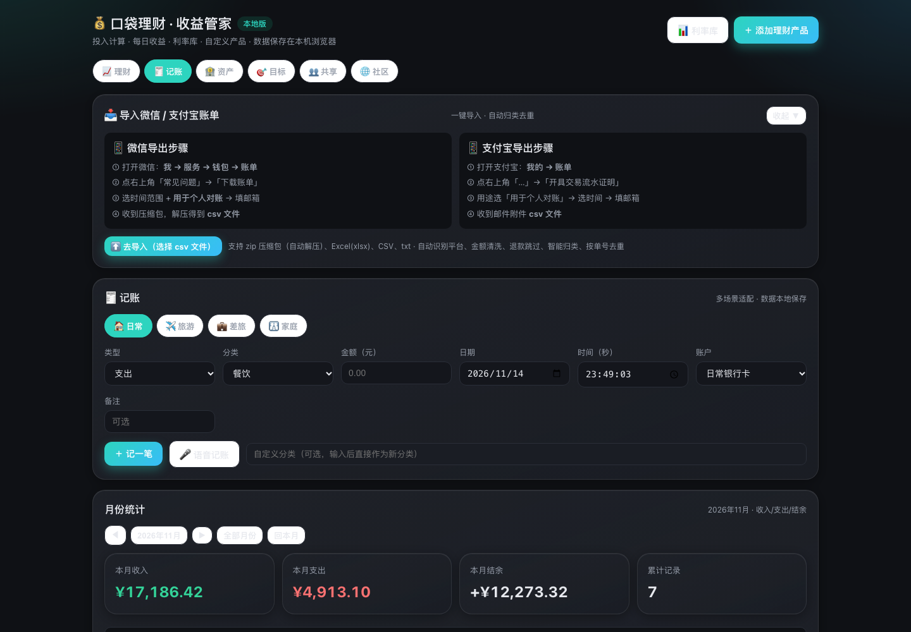
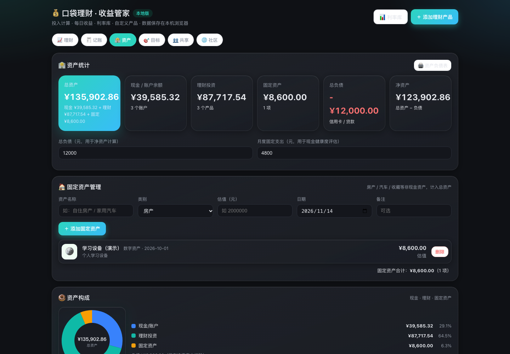

不是一张
好看的仪表盘。
源码中实际存在 7 个业务页面，以及完整的本地数据模型、收益计算、账单解析、资产汇总、目标测算、AA 结算、打印导出与 PWA 配置。核心流程可以连续演示，而不是静态原型。
01
财务总览
汇总账户余额、理财市值、固定资产与负债，计算净资产，并联动本月收支、预算使用率和目标进度。
真实实现02
理财收益
区分活期、定期、货币基金、基金与自定义产品，支持本金、期限、利率、净值及收益曲线展示。
财务规则03
多场景记账
覆盖日常、旅游、差旅、家庭四类场景，包含收入、支出、转账、预算、周期记账和账单导入。
数据闭环04
资产与目标
维护账户和固定资产，生成资产构成、资产负债视图，并用目标日期和月度投入估算达成路径。
分析能力05
共享与交付
提供多人 AA 账本、明细账单打印、月度报表、CSV 导出、JSON 备份与恢复。
实际可用一条完整的
个人财务路径。
项目从“记一笔”开始，继续走向汇总、分析和规划，最后通过备份、导出或打印把数据带出应用。每个页面都服务于同一条业务链路。
记录
账户、收入、支出与转账
归集
净资产、预算与分类汇总
分析
收益曲线、资产构成与报表
规划
目标缺口与月度投入估算
带走
CSV、JSON、打印与 PWA

理财收益与产品组合VIEW / 02

记账与预算VIEW / 03

资产与负债VIEW / 04
我具体做了什么
我负责需求定义、功能取舍、财务口径和数据结构，并使用 OpenAI Codex 辅助完成页面实现与迭代。项目不是单一流程演示，而是把收益口径、预算、账户余额、资产净值和目标进度放在同一套本地数据模型中反复校对。
交互上优先处理“下一步该做什么”：首页提供快捷入口，空状态给出操作指引，预算超支和目标缺口用明确文案反馈；数据上则提供导入、打印、CSV 与 JSON 路径，避免财务信息只能停留在页面中。
HTML / CSS / JavaScriptCanvas 2DlocalStoragePWAService WorkerOpenAI Codex